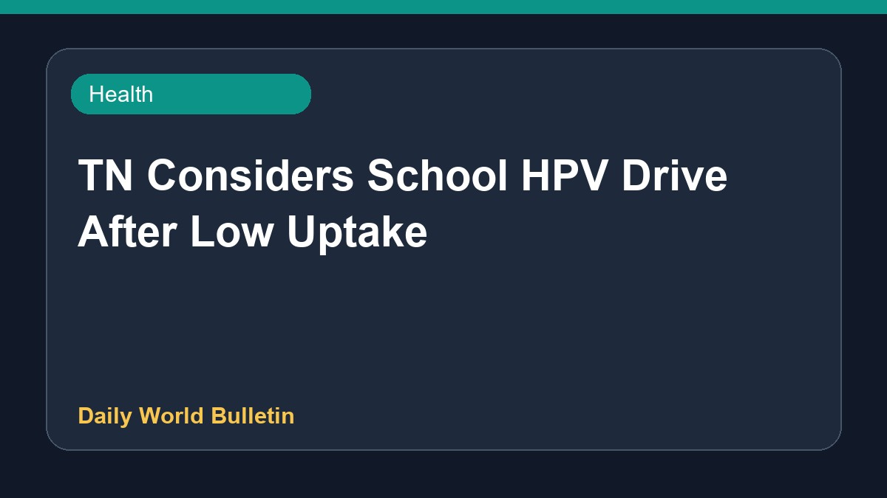

TN Considers School HPV Drive After Low Uptake

In Tamil Nadu, merely two thousand girls received the human papillomavirus vaccine over a period of six months. Following this notably low uptake, health authorities are considering the implementation of a vaccination drive directly within schools to improve coverage. Officials are reviewing current strategies to ensure better reach and awareness regarding the immunization program among the public. Further details about the proposed school-based initiative are expected to be released as planning progresses.
Original source: Health News Sources
Only 2,000 girls took HPV vaccine in six months; TN mulls drive in schools - The New Indian Express ↗
Only 2,000 girls took HPV vaccine in six months; TN mulls drive in schools - The New Indian Express ↗